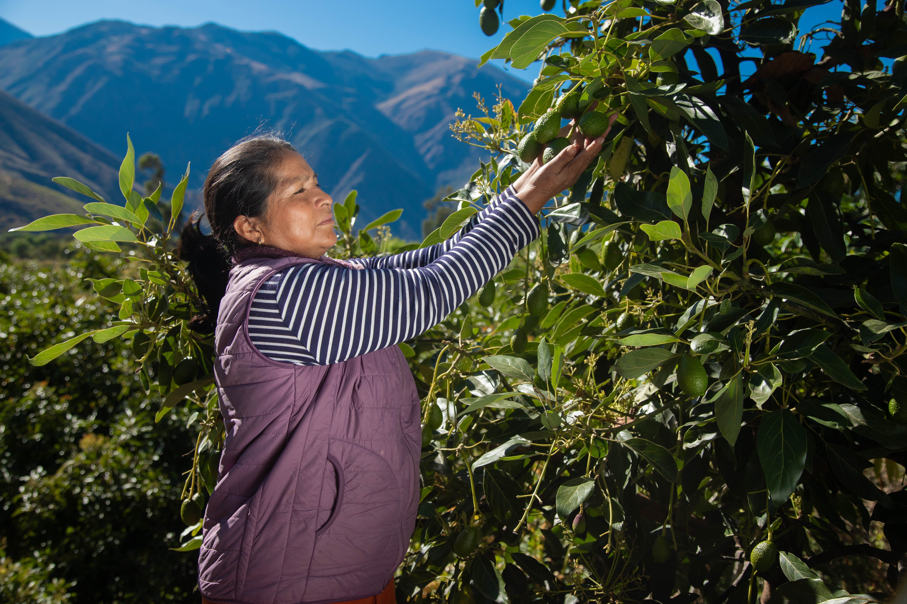

Nuestra Entidad
Somos una asociación local de pequeños productores que trabaja con identidad propia, respeto por nuestras raíces y una visión moderna hacia el comercio justo.
La mayoría de nuestros agricultores provienen de las comunidades de San Miguel, Patibamba y Ninabamba, ubicadas en el Valle de Torobamba.
Nos organizamos como Asociación Central de Productores Agropecuarios del Valle de Torobamba, y buscamos convertirnos en una cooperativa sólida que promueva el desarrollo integral de nuestras familias, con trazabilidad, calidad y sostenibilidad como pilares.
